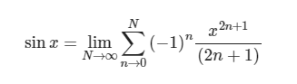

Error di dalam komputasi numerik sendiri adalah suatu nilai yang menyebabkan sebuah perhitungan suatu fungsi menjadi nilai yang tidak tepat / kurang akurat. Contoh sederhana suatu perhitungan yang memiliki error adalah sebagai berikut:
Misal kita mempunyai suatu nilai a = 13/8,
Jika dibulatkan dengan pembulatan 2 decimal hasilnya b = 1,66
Namun, Jika dibulatkan dengan pembulatan 5 decimal hasilnya c = 1,625
Kedua nilai b dan c memiliki nilai selisih, jika nilai tersebut dikurangkan dengan formula:
x = b – c
Maka, 1,66 – 1,625 = 0,035. Nilai 0,035 bisa disebut dengan nilai error / galat.
Beberapa error / kesalahan yang dapat terjadi di dalam komputasi numerik adalah sebagai berikut:
- Human Error
Karena manusia tidak akan pernah luput dari kesalahan, maka kesalahan yang mungkin saja dapat terjadi adalah kesalahan yang dilakukan oleh manusia itu sendiri. Kesalahan yang paling umum dilakukan oleh manusia dalam komputasi numerik adalah kesalarahan aritmatika dan kesalahan program computer yang telah dibuat.
- Round off errors
Kesalahan Round off errors atau biasa disebut juga kesalahan pembulatan, kesalahan ini bisa terjadi karena computer memiliki keterbatasan untuk mepresentasikan suatu angka. Kesalahan ini biasanya terjadi dalam perhitungan, dalam aturan pembulatan, bisanya ditetapkan bahwa:
a. Ketika digit terakhir didalam suatu angka belakang koma kurang dari 5, maka tidak akan dilakukan pembulatan
b. Sedangkan untuk digit terakhir di dalam suatu angka belakang koma lebih dari sama dengan 5, maka akan dilakukan pembulatan dengan penambahan sebanyak angka 1.
Untuk contohnya dapat dilihat pada penjelasan pada ilustrasi sebelumnya.
- Truncations errors
Kesalahan truncations atau biasa disebut kesalahan pemotongan, kesalahan ini terjadi karena ada perbedaan anatara nilai asli dan nilai pemotongan. Cara efektif untuk memahami kesalahan pemotongan adalah dengan menggunakan metode Aproksimasi Deret Taylor. Pendekatan deret Taylor dimulai dengan satu suku orde nol dan sebagai tambahan suku ditambahkan ke deret, nilai perkiraan di mulai dengan mendekati nilai sebenarnya. Namun, jumlah suku yang tidak terbatas akan diperlukan untuk mencapai nilai sebenarnya ini.
Sebagai contoh, berikut merupakan rumus dengan menggunakan deret taylor:
Karena batas akhirnya yang memiliki nilai tak hingga, maka dilakukan pemotongan suku agar peritungan yang dilakukan menjadi lebih sederhana.
Karena batas akhirnya yang memiliki nilai tak hingga, maka dilakukan pemotongan suku agar peritungan yang dilakukan menjadi lebih sederhana.